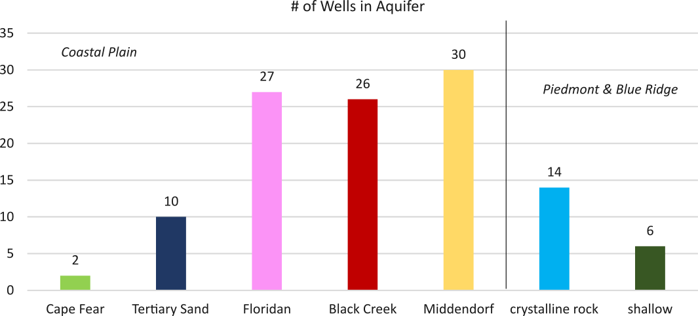

Selected Well
| Well ID |
|---|
| Aquifer |
| Site Name |
| Status |
| Type |
Hydrograph ---
Download Data
Groundwater Monitoring Network
The South Carolina Department of Natural Resources (DNR) routinely collects groundwater level data for water-resource assessments and for management and planning purposes. DNR's base groundwater monitoring network currently includes approximately 115 wells.
- Why does SCDNR collect groundwater data?
- How often are water levels measured?
- What aquifers are monitored by the network?
- What kind of statistics are included in data downloads?
- In what units are water levels reported?
- How long has groundwater been monitored by SCDNR?
These data are used to identify short- and long-term changes in groundwater levels and storage due to changes in withdrawals, recharge rates, and climatic conditions; to calibrate ground-water flow models; to produce potentiometric maps for the major aquifers in the Coastal Plain Province; and to determine regional hydraulic gradients, and groundwater flow rates and directions of the major aquifers.
Water levels of 77 wells are measured hourly with automated data recorders (ADRs); the remaining wells are measured periodically (manual wells), typically on a bimonthly basis using an electric measuring tape.
The Coastal Plain has six principle aquifers, which in ascending order are: Cape Fear, Middendorf, Black Creek, Tertiary sand, Floridan, and shallow aquifer system. Aquifers in the Piedmont and Blue Ridge provinces of the State are classified as crystalline rock or shallow aquifer system. The shallow aquifer system is further differentiated as saprolite or alluvium.

Statistical data are available for sites that record water levels on an hourly basis. Statistics include daily-average water level and corresponding values of monthly and yearly average, high and low water level. Daily average water levels are calculated for each day having 7 or fewer missing hourly measurements. Monthly average water levels are calculated for each month having 5 or fewer days of missing record, while monthly high and low water-level values are recorded for each month having at least one day of data. Yearly averages are computed for each calendar year having 60 or fewer missing days of record, while yearly highs and lows are recorded for each year with at least one day of data. Manual measurements at each well site are also available.
All groundwater levels available here are reported in feet below land surface, except for several flowing wells where water levels rise above land surface. Negative water-level values are assigned to these sites to indicate that water levels are above land surface as opposed to below land surface.
Most monitoring wells have been measured since the mid-to-late 1990s, although a number of wells existed before then, one dating back to 1955.
More Groundwater Resources
Potentiometric Maps --- available through the Hydrology Publications Page.
Contact Information
Contact Scott Harder, or whoever...
Disclaimer
Data presented on this web site may have been retrieved partially or entirely from several sources including federal or other state agencies. DNR makes every effort to provide accurate and complete information, however, the database is a "work in progress" and updates will occur regularly. In no event should the South Carolina Department of Natural Resources or any contributing agencies be liable for any direct or indirect, incidental, or other damages arising from the use of these data. DNR does not warrant, guarantee, or make any representations regarding the use, or the results of the use, of the information provided to you by the Department in terms of correctness, accuracy, reliability, timeliness or otherwise. The entire risk as to the results and performance of any information obtained from the DNR is entirely assumed by the recipient. DNR welcomes suggestions on how to improve our home page and correct errors.